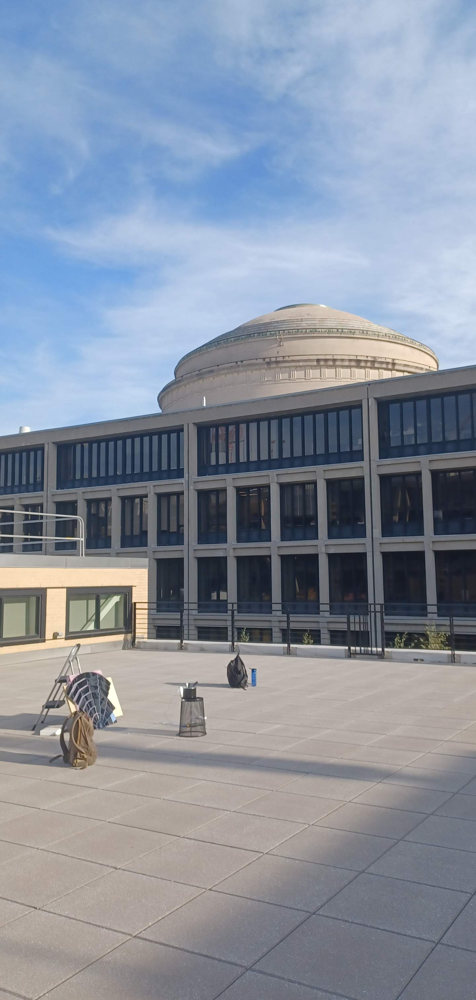
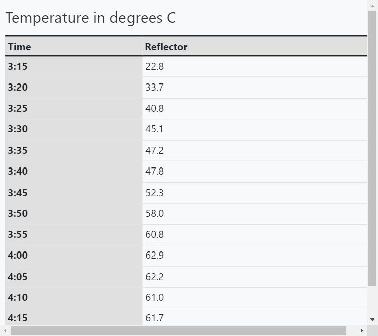

### Week 6: Testing the Fresnel Reflector
##### _Wednesday, October 12_
We took the reflector outside to see if this one panel would make water boil. We left the setup outside for about 60 minutes.

The temperature rose quickly in the first half of the experiment, but the rate decreased soon after and the temperature soon plateaued.

[Head back to the home page](../index.html).